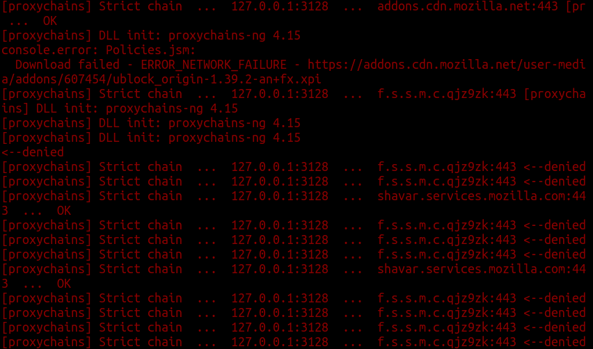

Librewolf
Librewolf is a Firefox fork with the primary goals of privacy, security and user freedom.[1]
Version tested: 95.0.2
Spyware Level: Low
Librewolf makes some calls on startup to f.s.s.m.c.qjz9zk which looks like an obliterated address, and shavar.services.mozilla.com which is intended (however it can be disabled by clearing the URL in browser.safebrowsing.provider.mozilla.updateURL).[2] There is also an attempt to check for updates regarding the pre-installed uBlock Origin extension.
This is a big improvement compared to Firefox.
